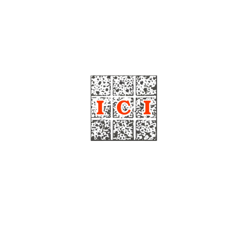

2nd International Conference on Sustainable Construction Technologies & Advancements in Civil Engineering
14th October – 16th October 2021
Department of Civil Engineering
Shri Vishnu Engineering College for Women (Autonomous), Bhimavaram
SHRI VISHNU ENGINEERING COLLEGE FOR WOMEN
(AUTONOMOUS)
(Permanently Affiliated to JNTUK, Accredited by NBA & NAAC with 'A' Grade)
(Winner in IMCRB National Quality Award 2017, Winner of APQO International Award)
Vishnupur,Bhimavaram-534202, W.G District, Andhra Pradesh, India
DEPARTMENT OF CIVIL ENGINEERING
In Association With
INDIAN CONCRETE INSTITUTE
-Student Chapter
Cordially Invites You All to the Prestigious
2nd International Conference on Sustainable Construction Technologies & Advancements in Civil Engineering
Dr Pala Gireesh Kumar
Conference Chair-ScTACE 2021
Head & Associate Processor, CE
SVECW( A)